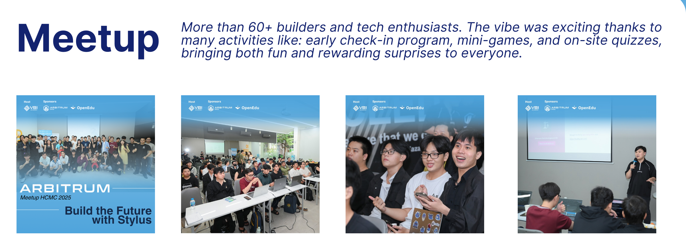
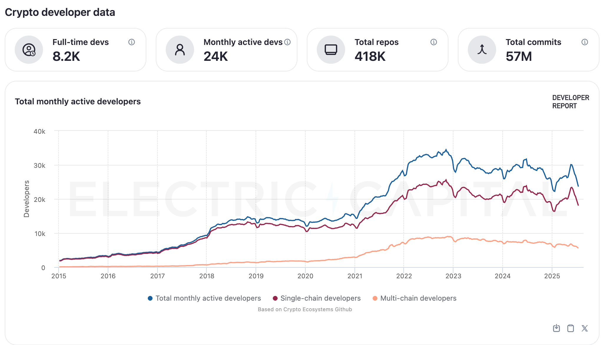

Trong quá trình phát triển ứng dụng blockchain, đặc biệt là trên Ethereum, nhiều dev đã phải đối mặt với những challenges không nhỏ từ từ việc đọc và phân tích bytecode trên Etherscan cho đến việc tránh các lỗ hổng tiềm ẩn trong code Solidity.
Trong khi đa số lập trình viên quen thuộc với các ngôn ngữ như Rust, C++ hoặc Python.. thì việc bắt đầu tiếp cận Solidity và môi trường EVM đòi hỏi một quá trình học tập và làm quen không hề dễ dàng.
Motivation for Arbitrum Stylus
Arbitrum Stylus được sinh ra để giải quyết hai vấn đề:
- Blockchain khó tiếp cận với dev truyền thống
- Smart contract thì execute chậm.

Theo báo cáo Developer Report của Electric Capital, hiện tại chỉ có khoảng 24,000 dev hoạt động hàng tháng trong mảng blockchain tính từ thời điểm mình viết bài này.
Nghe thì có vẻ ổn, nhưng nếu so với hàng triệu (thậm chí chục triệu) dev đang dùng các ngôn ngữ như Rust hay C++ ngoài kia thì… vẫn còn cách biệt quá lớn. Khi Web3 càng mở rộng, nhu cầu onboard hàng triệu dev mới vào web3 developer đang trở thành bài toán cho Devrel như tụi mình 🥲.
Và cách hiệu quả nhất để kéo dev truyền thống vào blockchain chính là cho họ dùng lại những ngôn ngữ họ đã quen thuộc như Rust hoặc C++. Nhiều hệ sinh thái non-EVM như Solana, Cosmos đã đi theo hướng này, với Rust gần như trở thành "tiêu chuẩn" để viết smart contract.
Còn bên EVM, trước giờ vẫn phải xài Solidity. Nhưng giờ thì khác rồi, vì Arbitrum Stylus cho phép dev viết smart contract bằng Rust hoặc C++ và deploy thẳng lên chain EVM-compatible như thường. Một step cho phép để xóa bỏ rào cản ngôn ngữ và mở cửa cho dev web2.
Làm sao để "Smart Contract Execution" có thể hiệu quả hơn ?
Khi các ứng dụng phi tập trung (dApps) bắt đầu scale, nhu cầu xử lý on-chain cũng tăng theo đặc biệt là trên Ethereum. Nhưng cũng chính nhờ áp lực này mà nhiều làn sóng sáng tạo để scale blockchain đã nổ ra và Arbitrum là một trong những cái tên nổi bật với loạt solutions như Arbitrum One (Layer2 chain) và công nghệ Arbitrum Nitro.
Nếu như các giải pháp trước chủ yếu tối ưu theo kiểu gộp nhiều transaction lại (inter-transactional optimization), thì Stylus sẽ tối ưu từng transaction được xử lý từ bên trong (intra-transactional).
Cụ thể hơn, Stylus cho phép smart contract chạy bằng WebAssembly (WASM). Với kết quả này thì Contract Stylus sẽ có thể chạy nhanh hơn nhiều lần, giúp giảm gas và khả năng sử dụng memory
Stylus: Cầu nối giữa WASM và EVM
Để hiểu vì sao Stylus một phần của hệ sinh thái Arbitrum lại hiệu quả và dễ mở rộng (composable) hơn so với các engine EVM truyền thống, ta cần bắt đầu từ nền tảng công nghệ mà Stylus sử dụng: WebAssembly (WASM).
WebAssembly, hay WASM, là một dạng ngôn ngữ dạng assembly – tức là ngôn ngữ ở mức thấp, gần với máy, dạng mã nhị phân (binary) có thể được thực thi trực tiếp bởi trình duyệt hoặc máy ảo.
Khác với các ngôn ngữ cấp cao như Rust, C++, hay Go vốn hướng đến con người đọc hiểu, những ngôn ngữ này cần phải biên dịch (compile) xuống WASM trước khi có thể được thực thi.
Chính vì tính chất portable (di động), modular (mô-đun hóa) và hiệu suất cao, WASM ngày càng được sử dụng rộng rãi ngoài môi trường web, bao gồm cả trong blockchain và các VM (Virtual Machines) hiện đại.
Với nâng cấp Arbitrum Nitro (Đọc thêm ở Arbitrum_intro.md), mọi tranh chấp (dispute) trong hệ thống đều được xử lý bằng cách thực thi lại chương trình thông qua WASM-based fraud proofs.

Điều này có nghĩa là bất kỳ đoạn mã nào được biên dịch xuống WASM đều có thể được xử lý trong hệ thống bằng cách chứng minh gian lận (fraud proof) một cách xác minh được on-chain.
Dựa trên nền tảng đó, Arbitrum Stylus được xây dựng nhằm mở rộng khả năng thực thi contract bằng cách tích hợp một WASM execution engine vào hệ thống hiện có.
Engine này được triển khai trên nền tảng Wasmer, một trong những trình thực thi WASM hiệu suất cao hàng đầu hiện nay. So với máy ảo Ethereum (EVM) sử dụng Geth, Wasmer có khả năng thực thi nhanh hơn đáng kể.
Với việc kết hợp cả engine thực thi (Wasmer) và engine xác minh (fraud prover từ Nitro), Stylus cho phép các smart contract: * Được viết bằng ngôn ngữ phổ thông như Rust hoặc C++ * Được compiple sang WASM * và được thực thi trong môi trường trustless.
Thay vì giới hạn trong phạm vi Solidity và EVM bytecode, anh em dev có thể tận dụng các ngôn ngữ truyền thống vđể triển khai các ứng dụng Web3 hiệu suất cao trên Arbitrum.
Tính nhất quán trong EVM+ Engine của Stylus
Đọc đến đây, bạn có thể thắc mắc là làm sao nó quản lý được hai máy ảo khác nhau? Stylus làm sao biết contract nào chạy bằng EVM? Contract nào chạy bằng WASM? Và làm sao để hai bên tương tác không bị lệch trạng thái?
Từ hình minh hoạ trên, thì mọi người có thể hiểu Stylus được thiết kế với hai môi trường thực thi song song:
-
EVM Engine, sử dụng Geth để chạy các contract viết bằng Solidity (hoặc các ngôn ngữ compile sang EVM bytecode).
-
WASM Engine: sử dụng Wasmer để chạy các contract viết bằng Rust hoặc các ngôn ngữ WASM-compatible.
Để cả hai engine này hoạt động đồng thời mà không gây xung đột, hệ thống cần đảm bảo tính nhất quán (coherence) trong cách truy cập và cập nhật trạng thái on-chain.
Khi viết smart contract bằng Solidity, nó sẽ được compile ra EVM bytecode như bình thường. Khi dùng Rust hoặc ngôn ngữ WASM-compatible, contract của bạn sẽ được compile ra WASM bytecode, nhưng có gắn thêm một phần gọi là “header” ở đầu nghĩa là giống như nhãn để Stylus biết “contract này là WASM”.
Thiết kế này giúp Stylus tự động điều hướng chính xác giữa hai môi trường thực thi mà không cần dev phải can thiệp thủ công. Không chỉ vậy, nó còn mở ra khả năng interop (tương tác) cao:
- Contract viết bằng WASM có thể gọi contract Solidity.
- Contract Solidity cũng có thể gọi ngược lại contract WASM.
Đây là điểm khác biệt lớn giữa Stylus và các chain WASM khác. Stylus không chỉ thêm một engine mới, mà còn đảm bảo sự hợp nhất liền mạch với hệ EVM hiện có, giúp giữ nguyên khả năng tương thích ngược (backward compatibility) và giúp các contract WASM tận dụng được thanh khoản của hệ sinh thái EVM (DeFi, NFT, token…).
Có thể hình dung blockchain như một “world state machine” nơi mọi giao dịch, gọi contract đều làm thay đổi trạng thái global. Trên Ethereum và Arbitrum, trạng thái này được lưu dưới dạng Trie structure là một dạng cây dữ liệu dùng để lưu trữ, truy xuất dữ liệu hiệu quả và dễ xác minh.
Trong Stylus, cả EVM engine và WASM engine đều dùng chung Trie này để đọc và ghi dữ liệu. Điều này có nghĩa bất kể khi gọi contract Solidity hay Rust, kết quả cuối cùng đều cập nhật vào cùng một trạng thái blockchain.
Stylus save phần cost như thế nào ?
Mình biết là Stylus có hai engine chạy song song là EVM và WASM. Giờ ta sẽ đi sâu vào lý do tại sao WASM lại tiết kiệm gas đến vậy.
Để hiểu rõ điều này, hãy tưởng tượng mình cần thực hiện phép tính đơn giản: 2 + 3.
Nếu dùng EVM, chuỗi thao tác để hoàn thành phép cộng này không chỉ là cộng hai số mà phải trả gas cho rất nhiều bước hệ thống như truy xuất bảng nhớ, pop số ra khỏi stack, xử lý phép cộng, rồi push kết quả trở lại stack.
Tức là dù bạn chỉ cần cộng hai con số, bạn vẫn phải trả gas cho cả đống bước phụ tốn kém, mà chỉ có đúng một bước thực sự làm công việc cộng.
Ngược lại, nếu bạn thực hiện cùng phép tính đó bằng WASM trong Stylus, nó chỉ cần một lệnh máy duy nhất – gọi thẳng tới lệnh ADD của CPU như x86 hay ARM. Không cần stack, không cần xử lý phụ.

Kết quả là thao tác cộng này rẻ hơn gấp 150 lần so với chạy bằng EVM. Và vì WASM quá rẻ, Stylus còn tạo ra một đơn vị đo gas riêng gọi là ink, nơi 1 ink chỉ bằng 1 phần 10.000 gas, để đo những phép tính siêu nhỏ một cách chính xác hơn. Bạn thậm chí có thể cấu hình đơn vị này nếu bạn đang chạy một chain riêng.
Tuy nhiên, để khởi chạy môi trường WASM của Stylus, bạn cần trả một chi phí cố định ban đầu là 114 triệu gas.
Ngoài ra, mỗi lần gọi contract Stylus cũng tốn thêm từ 128 đến 2048 gas.
Nên nếu bạn chỉ muốn dùng Stylus để cộng 2 số, thì không đáng. Nhưng nếu đang xây những ứng dụng cần xử lý nhiều dữ liệu, dùng nhiều RAM, hay tính toán phức tạp như AI hoặc crypto-heavy apps, thì Stylus là giải pháp tốt.
Ví dụ, việc cấp phát 3.8MB bộ nhớ trong EVM sẽ tốn tới 32 triệu gas, nhưng trong Stylus chỉ tốn khoảng 64 nghìn gas tức là tiết kiệm gấp 500 lần. Điều này có nghĩa là những ứng dụng memory-heavy mà EVM trước giờ không thể xử lý được thì với Stylus, không những xử lý được mà còn cực kỳ rẻ.
Github assignments
I have prepared the basic challenges for builders participating in the Arbitrum workshop: https://github.com/vbi-academy/stylus-workshop-basic